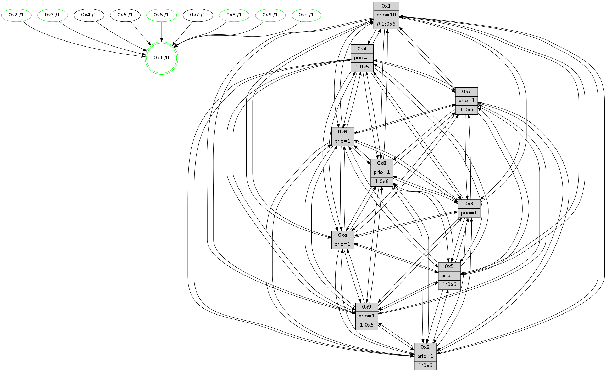

>> << IDX [start] -100 -25 -5 +0 +5 +25 +100 [1245.00096798]
 Previous packets
----------------------------------------------------------------------
1240.158603 beacon01(faad) #0 coord=01,02,03,04,05,06,07,0a,09,08 cycle=688.0ms assoc
-- color-indic=1 64 4d e0
1240.168586 beacon02(faad) #0 coord=01,02,03,04,05,06,07,0a,09,08 cycle=688.0ms assoc 64 de d1
1240.178584 beacon03(faad) #0 coord=01,02,03,04,05,06,07,0a,09,08 cycle=688.0ms assoc 64 a4 9c
1240.188585 beacon04(faad) #0 coord=01,02,03,04,05,06,07,0a,09,08 cycle=688.0ms assoc 64 d3 76
1240.198587 beacon05(faad) #0 coord=01,02,03,04,05,06,07,0a,09,08 cycle=688.0ms assoc 64 a9 3b
1240.208588 beacon06(faad) #0 coord=01,02,03,04,05,06,07,0a,09,08 cycle=688.0ms assoc 64 27 ec
1240.218589 beacon07(faad) #0 coord=01,02,03,04,05,06,07,0a,09,08 cycle=688.0ms assoc 64 5d a1
1240.228593 beacon0a(faad) #0 coord=01,02,03,04,05,06,07,0a,09,08 cycle=688.0ms assoc 64 2c aa
1240.238592 beacon09(faad) #0 coord=01,02,03,04,05,06,07,0a,09,08 cycle=688.0ms assoc 64 a2 7d
1240.248591 beacon08(faad) #0 coord=01,02,03,04,05,06,07,0a,09,08 cycle=688.0ms assoc 64 d8 30
1240.260070 [Hello(4): seq=791 sym=5,7,6,2,3,9,8,10,1 sysInfo= stat=5:12,11,6,0/7:11,15,10,1/6:13,0,11,13/2:3,4,2,15/3:11,10,11,13/9:1,0,0,0/8:6,13,3,1/10:9,3,1,14/1:10,0,9,1]
1240.264670 [Color(1) seq=472 @0:0 prio=10 >>1.@6,1.@7,1.@8]
1240.266443 [Hello(8): seq=735 sym=5,2,3,7,9,6,4,10,1 sysInfo=hasWarning stat=5:2,5,10,0/2:14,1,9,11/3:5,4,13,1/7:10,9,3,0/9:2,7,10,3/6:5,3,12,14/4:6,1,1,0/10:11,8,15,4/1:15,9,9,0]
1240.270587 [Hello(9): seq=735 sym=2,5,3,4,7,6,8,10,1 sysInfo=hasWarning stat=2:7,5,5,9/5:14,3,6,6/3:5,13,12,1/4:15,14,5,0/7:0,7,9,1/6:2,11,2,12/8:13,0,7,4/10:8,3,11,4/1:14,7,11,1]
1240.274096 [Hello(7): seq=791 sym=2,3,5,6,4,8,9,10,1 sysInfo=hasWarning stat=2:3,11,2,2/3:9,1,3,1/5:9,1,14,2/6:10,8,1,10/4:1,3,12,1/8:8,13,2,0/9:2,0,0,0/10:12,5,2,6/1:3,13,7,0]
1240.280076 [Color(8) seq=390 @0:0 prio=1 >1.@6,1.@7,1.@9,1.@a]
1240.285653 [Hello(10): seq=724 sym=6,2,3,8,7,5,9,4,1 sysInfo=hasWarning stat=6:7,15,4,2/2:8,8,8,11/3:9,5,11,12/8:8,0,1,2/7:12,10,10,6/5:8,11,1,15/9:2,15,11,3/4:15,9,10,0/1:1,0,5,1]
----------------------------------------------------------------------
1240.946733 beacon01(faad) #0 coord=01,02,03,04,05,06,07,0a,09,08 cycle=688.0ms assoc
-- color-indic=1 64 99 d5
1240.956715 beacon02(faad) #0 coord=01,02,03,04,05,06,07,0a,09,08 cycle=688.0ms assoc 64 0a e4
1240.966714 beacon03(faad) #0 coord=01,02,03,04,05,06,07,0a,09,08 cycle=688.0ms assoc 64 70 a9
1240.976715 beacon04(faad) #0 coord=01,02,03,04,05,06,07,0a,09,08 cycle=688.0ms assoc 64 07 43
1240.986716 beacon05(faad) #0 coord=01,02,03,04,05,06,07,0a,09,08 cycle=688.0ms assoc 64 7d 0e
1240.996715 beacon06(faad) #0 coord=01,02,03,04,05,06,07,0a,09,08 cycle=688.0ms assoc 64 f3 d9
1241.006716 beacon07(faad) #0 coord=01,02,03,04,05,06,07,0a,09,08 cycle=688.0ms assoc 64 89 94
1241.016720 beacon0a(faad) #0 coord=01,02,03,04,05,06,07,0a,09,08 cycle=688.0ms assoc 64 f8 9f
1241.036723 beacon08(faad) #0 coord=01,02,03,04,05,06,07,0a,09,08 cycle=688.0ms assoc 64 0c 05
1241.049818 [Hello(5): seq=792 sym=7,6,4,3,1,9,8,10,2 sysInfo=hasWarning stat=7:6,11,0,13/6:6,15,12,3/4:5,4,8,13/3:10,8,9,15/1:15,9,8,0/9:6,15,5,9/8:1,7,4,3/10:0,14,6,8/2:5,13,9,7]
1241.052937 [Color(10) seq=381 @0:0 prio=1]
1241.055366 [Hello(6): seq=792 sym=2,3,5,4,7,9,8,10,1 sysInfo=hasWarning stat=2:10,14,4,0/3:0,1,0,0/5:6,2,6,2/4:12,13,3,5/7:6,7,14,12/9:10,15,12,9/8:5,7,8,5/10:0,1,9,12/1:14,11,9,1]
1241.057867 [Hello(2): seq=788 sym=4,5,7,6,3,9,8,10,1 sysInfo=hasWarning stat=4:14,9,15,11/5:5,9,1,1/7:7,5,15,14/6:6,12,1,1/3:11,0,0,10/9:14,10,7,8/8:10,1,13,11/10:1,2,7,10/1:15,14,4,0]
1241.060427 [Color(6) seq=424 @0:0 prio=1]
1241.062088 [Color(2) seq=368 @0:0 prio=1 >1.@6,1.@7,1.@8,1.@9]
1241.071296 [Color(3) seq=421 @0:0 prio=1]
----------------------------------------------------------------------
1241.734864 beacon01(faad) #0 coord=01,02,03,04,05,06,07,0a,09,08 cycle=688.0ms assoc
-- color-indic=1 64 25 d0
1241.744846 beacon02(faad) #0 coord=01,02,03,04,05,06,07,0a,09,08 cycle=688.0ms assoc 64 b6 e1
1241.754847 beacon03(faad) #0 coord=01,02,03,04,05,06,07,0a,09,08 cycle=688.0ms assoc 64 cc ac
1241.764847 beacon04(faad) #0 coord=01,02,03,04,05,06,07,0a,09,08 cycle=688.0ms assoc 64 bb 46
1241.774848 beacon05(faad) #0 coord=01,02,03,04,05,06,07,0a,09,08 cycle=688.0ms assoc 64 c1 0b
1241.784847 beacon06(faad) #0 coord=01,02,03,04,05,06,07,0a,09,08 cycle=688.0ms assoc 64 4f dc
1241.794847 beacon07(faad) #0 coord=01,02,03,04,05,06,07,0a,09,08 cycle=688.0ms assoc 64 35 91
1241.804851 beacon0a(faad) #0 coord=01,02,03,04,05,06,07,0a,09,08 cycle=688.0ms assoc 64 44 9a
1241.814852 beacon09(faad) #0 coord=01,02,03,04,05,06,07,0a,09,08 cycle=688.0ms assoc 64 ca 4d
1241.824854 beacon08(faad) #0 coord=01,02,03,04,05,06,07,0a,09,08 cycle=688.0ms assoc 64 b0 00
1241.836308 [Hello(7): seq=792 sym=2,3,5,6,4,8,9,10,1 sysInfo=hasWarning stat=2:4,12,2,2/3:9,2,3,1/5:9,1,14,2/6:11,9,1,10/4:1,3,12,1/8:8,14,2,0/9:2,0,0,0/10:13,6,2,6/1:3,13,7,0]
1241.840955 [Color(1) seq=473 @0:0 prio=10 >>1.@6,1.@7,1.@8]
1241.843699 [Hello(10): seq=725 sym=6,2,3,8,7,5,9,4,1 sysInfo=hasWarning stat=6:8,0,4,2/2:9,9,8,11/3:9,6,11,12/8:8,0,1,2/7:12,10,10,6/5:8,11,1,15/9:2,15,11,3/4:15,9,10,0/1:2,0,5,1]
1241.846236 [Hello(8): seq=736 sym=5,2,3,7,9,6,4,10,1 sysInfo=hasWarning stat=5:3,5,10,0/2:15,2,9,11/3:5,5,13,1/7:10,9,3,0/9:2,7,10,3/6:6,4,12,14/4:7,1,1,0/10:12,9,15,4/1:15,9,9,0]
1241.855933 [Hello(4): seq=792 sym=5,7,6,2,3,9,8,10,1 sysInfo= stat=5:13,11,6,0/7:12,15,10,1/6:14,1,11,13/2:4,5,2,15/3:11,11,11,13/9:2,0,0,0/8:7,14,3,1/10:10,4,1,14/1:10,1,9,1]
----------------------------------------------------------------------
1242.522996 beacon01(faad) #0 coord=01,02,03,04,05,06,07,0a,09,08 cycle=688.0ms assoc
-- color-indic=1 64 e1 de
1242.532978 beacon02(faad) #0 coord=01,02,03,04,05,06,07,0a,09,08 cycle=688.0ms assoc 64 72 ef
1242.542979 beacon03(faad) #0 coord=01,02,03,04,05,06,07,0a,09,08 cycle=688.0ms assoc 64 08 a2
1242.552979 beacon04(faad) #0 coord=01,02,03,04,05,06,07,0a,09,08 cycle=688.0ms assoc 64 7f 48
1242.562979 beacon05(faad) #0 coord=01,02,03,04,05,06,07,0a,09,08 cycle=688.0ms assoc 64 05 05
1242.572980 beacon06(faad) #0 coord=01,02,03,04,05,06,07,0a,09,08 cycle=688.0ms assoc 64 8b d2
1242.582981 beacon07(faad) #0 coord=01,02,03,04,05,06,07,0a,09,08 cycle=688.0ms assoc 64 f1 9f
1242.592985 beacon0a(faad) #0 coord=01,02,03,04,05,06,07,0a,09,08 cycle=688.0ms assoc 64 80 94
1242.602984 beacon09(faad) #0 coord=01,02,03,04,05,06,07,0a,09,08 cycle=688.0ms assoc 64 0e 43
1242.612984 beacon08(faad) #0 coord=01,02,03,04,05,06,07,0a,09,08 cycle=688.0ms assoc 64 74 0e
1242.625080 [Hello(5): seq=793 sym=7,6,4,3,1,9,8,10,2 sysInfo=hasWarning stat=7:7,11,0,13/6:7,0,12,3/4:6,4,8,13/3:10,9,9,15/1:15,10,8,0/9:7,15,5,9/8:2,7,4,3/10:1,15,6,8/2:6,14,9,7]
1242.628548 [Hello(3): seq=793 sym=1,7,6,2,4,8,9,10,5 sysInfo=hasWarning stat=1:15,0,9,0/7:8,8,5,12/6:9,0,1,0/2:6,0,7,0/4:7,4,8,11/8:15,0,2,4/9:7,8,11,15/10:10,4,1,4/5:3,0,14,0]
1242.631798 [Hello(6): seq=793 sym=2,3,5,4,7,9,8,10,1 sysInfo=hasWarning stat=2:10,15,4,0/3:0,2,0,0/5:7,2,6,2/4:13,13,3,5/7:7,7,14,12/9:10,15,12,9/8:6,8,8,5/10:1,1,9,12/1:14,12,9,1]
1242.634390 [Color(3) seq=422 @0:0 prio=1]
1242.635899 [Color(6) seq=425 @0:0 prio=1]
1242.638858 [Hello(1): seq=702 sym=4,2,9,5,10,3,8,6,7 sysInfo=coloring-mode-on,ColoringModeRequestCalled stat=4:1,15,4,0/2:4,12,12,3/9:2,0,2,0/5:6,10,5,7/10:10,2,2,7/3:11,1,10,8/8:11,0,2,1/6:7,2,14,15/7:11,6,7,14]
1242.643286 [STC(1) #0.200 tree-change,inconsistent-stability,stable,to-color d=0]
1242.644720 [Color(10) seq=382 @0:0 prio=1]
1242.649469 [Hello(2): seq=789 sym=4,5,7,6,3,9,8,10,1 sysInfo=hasWarning stat=4:15,9,15,11/5:5,9,1,1/7:8,5,15,14/6:6,12,1,1/3:11,1,0,10/9:15,10,7,8/8:11,1,13,11/10:2,2,7,10/1:15,15,4,0]
1242.654527 [Color(2) seq=369 @0:0 prio=1 >1.@6,1.@7,1.@8,1.@9]
----------------------------------------------------------------------
1243.311128 beacon01(faad) #0 coord=01,02,03,04,05,06,07,0a,09,08 cycle=688.0ms assoc
-- color-indic=1 64 5d db
1243.321112 beacon02(faad) #0 coord=01,02,03,04,05,06,07,0a,09,08 cycle=688.0ms assoc 64 ce ea
1243.331111 beacon03(faad) #0 coord=01,02,03,04,05,06,07,0a,09,08 cycle=688.0ms assoc 64 b4 a7
1243.341112 beacon04(faad) #0 coord=01,02,03,04,05,06,07,0a,09,08 cycle=688.0ms assoc 64 c3 4d
1243.351110 beacon05(faad) #0 coord=01,02,03,04,05,06,07,0a,09,08 cycle=688.0ms assoc 64 b9 00
1243.361111 beacon06(faad) #0 coord=01,02,03,04,05,06,07,0a,09,08 cycle=688.0ms assoc 64 37 d7
1243.371112 beacon07(faad) #0 coord=01,02,03,04,05,06,07,0a,09,08 cycle=688.0ms assoc 64 4d 9a
1243.381117 beacon0a(faad) #0 coord=01,02,03,04,05,06,07,0a,09,08 cycle=688.0ms assoc 64 3c 91
1243.391116 beacon09(faad) #0 coord=01,02,03,04,05,06,07,0a,09,08 cycle=688.0ms assoc 64 b2 46
1243.401116 beacon08(faad) #0 coord=01,02,03,04,05,06,07,0a,09,08 cycle=688.0ms assoc 64 c8 0b
1243.412352 [Hello(10): seq=726 sym=6,2,3,8,7,5,9,4,1 sysInfo=hasWarning stat=6:8,0,4,2/2:10,10,8,11/3:9,6,11,12/8:9,1,1,2/7:12,10,10,6/5:9,11,1,15/9:2,15,11,3/4:0,9,10,0/1:2,0,5,1]
1243.414767 [Hello(4): seq=793 sym=5,7,6,2,3,9,8,10,1 sysInfo= stat=5:14,11,6,0/7:12,15,10,1/6:15,2,11,13/2:5,6,2,15/3:12,12,11,13/9:2,0,0,0/8:7,14,3,1/10:10,5,1,14/1:11,1,10,1]
1243.417337 [Color(1) seq=474 @0:0 prio=10 >>1.@6,1.@7,1.@8]
1243.419496 [STC(4)->1 #0.200 tree-change,inconsistent-stability,to-color d=1]
1243.421007 [STC(3)->1 #0.200 tree-change,inconsistent-stability,stable,to-color d=1]
1243.422703 [Hello(7): seq=793 sym=2,3,5,6,4,8,9,10,1 sysInfo=hasWarning stat=2:5,13,2,2/3:10,3,3,1/5:10,1,14,2/6:12,10,1,10/4:2,3,12,1/8:9,15,2,0/9:2,0,0,0/10:14,7,2,6/1:4,14,8,0]
1243.426144 [STC(7)->1 #0.200 tree-change,inconsistent-stability,to-color d=1]
1243.429465 [STC(6)->1 #0.200 tree-change,inconsistent-stability,stable,to-color d=1]
1243.431308 [STC(5)->1 #0.200 tree-change,inconsistent-stability,to-color d=1]
1243.436915 [Hello(9): seq=737 sym=2,5,3,4,7,6,8,10,1 sysInfo=hasWarning stat=2:9,7,5,9/5:0,3,6,6/3:7,15,12,1/4:0,14,5,0/7:1,7,9,1/6:3,13,2,12/8:13,1,7,4/10:9,4,11,4/1:15,7,12,1]
1243.440965 [Hello(8): seq=737 sym=5,2,3,7,9,6,4,10,1 sysInfo=hasWarning stat=5:4,5,10,0/2:0,3,9,11/3:6,6,13,1/7:11,9,3,0/9:2,7,10,3/6:7,5,12,14/4:8,1,1,0/10:12,10,15,4/1:0,9,10,0]
1243.444744 [STC(8)->1 #0.200 tree-change,inconsistent-stability,stable,to-color d=1]
1243.446710 [Color(8) seq=392 @0:0 prio=1 >1.@6,1.@7,1.@9,1.@a]
1243.455827 [STC(9)->1 #0.200 tree-change,inconsistent-stability,stable,to-color d=1]
1243.459371 [TreeStatus(9)-.->1 #0.200 tree-change,inconsistent-stability,stable child=1]
----------------------------------------------------------------------
1244.099258 beacon01(faad) #0 coord=01,02,03,04,05,06,07,0a,09,08 cycle=688.0ms assoc
-- color-indic=1 64 69 c3
1244.109241 beacon02(faad) #0 coord=01,02,03,04,05,06,07,0a,09,08 cycle=688.0ms assoc 64 fa f2
1244.119241 beacon03(faad) #0 coord=01,02,03,04,05,06,07,0a,09,08 cycle=688.0ms assoc 64 80 bf
1244.129241 beacon04(faad) #0 coord=01,02,03,04,05,06,07,0a,09,08 cycle=688.0ms assoc 64 f7 55
1244.139241 beacon05(faad) #0 coord=01,02,03,04,05,06,07,0a,09,08 cycle=688.0ms assoc 64 8d 18
1244.149241 beacon06(faad) #0 coord=01,02,03,04,05,06,07,0a,09,08 cycle=688.0ms assoc 64 03 cf
1244.159243 beacon07(faad) #0 coord=01,02,03,04,05,06,07,0a,09,08 cycle=688.0ms assoc 64 79 82
1244.169245 beacon0a(faad) #0 coord=01,02,03,04,05,06,07,0a,09,08 cycle=688.0ms assoc 64 08 89
1244.179246 beacon09(faad) #0 coord=01,02,03,04,05,06,07,0a,09,08 cycle=688.0ms assoc 64 86 5e
1244.189247 beacon08(faad) #0 coord=01,02,03,04,05,06,07,0a,09,08 cycle=688.0ms assoc 64 fc 13
1244.201147 [Hello(1): seq=703 sym=4,2,9,5,10,3,8,6,7 sysInfo=coloring-mode-on,ColoringModeRequestCalled stat=4:1,15,5,0/2:5,13,12,3/9:3,0,3,1/5:6,10,6,7/10:11,3,2,7/3:11,1,11,8/8:12,1,3,1/6:7,2,15,15/7:12,6,8,14]
1244.204502 [Color(10) seq=383 @0:0 prio=1]
1244.205974 [Hello(5): seq=794 sym=7,6,4,3,1,9,8,10,2 sysInfo=hasWarning stat=7:7,11,0,13/6:8,1,12,3/4:6,4,8,13/3:11,10,9,15/1:0,10,9,0/9:8,15,6,10/8:3,8,5,3/10:1,0,6,8/2:7,15,9,7]
1244.208694 [Hello(2): seq=790 sym=4,5,7,6,3,9,8,10,1 sysInfo=hasWarning stat=4:15,9,0,11/5:6,9,2,1/7:9,5,0,14/6:6,12,2,1/3:11,1,1,10/9:0,10,8,9/8:12,2,14,11/10:3,2,7,10/1:15,0,4,0]
1244.212120 [Hello(3): seq=794 sym=1,7,6,2,4,8,9,10,5 sysInfo=hasWarning stat=1:0,0,10,0/7:9,8,6,12/6:9,1,2,0/2:7,1,7,0/4:7,4,8,11/8:0,1,3,4/9:8,8,12,0/10:10,5,1,4/5:4,0,15,0]
1244.214782 [Hello(6): seq=794 sym=2,3,5,4,7,9,8,10,1 sysInfo=hasWarning stat=2:11,0,4,0/3:0,2,0,0/5:8,2,7,2/4:13,13,3,5/7:7,7,14,12/9:11,15,13,10/8:7,9,9,5/10:1,2,9,12/1:15,12,10,1]
1244.217626 [Color(3) seq=423 @0:0 prio=1]
1244.220435 [Color(2) seq=370 @0:0 prio=1 >1.@6,1.@7,1.@8,1.@9]
1244.222516 [Color(6) seq=426 @0:0 prio=1]
----------------------------------------------------------------------
1244.887388 beacon01(faad) #0 coord=01,02,03,04,05,06,07,0a,09,08 cycle=688.0ms assoc
-- color-indic=1 64 d5 c6
1244.897369 beacon02(faad) #0 coord=01,02,03,04,05,06,07,0a,09,08 cycle=688.0ms assoc 64 46 f7
1244.907370 beacon03(faad) #0 coord=01,02,03,04,05,06,07,0a,09,08 cycle=688.0ms assoc 64 3c ba
1244.917370 beacon04(faad) #0 coord=01,02,03,04,05,06,07,0a,09,08 cycle=688.0ms assoc 64 4b 50
1244.927371 beacon05(faad) #0 coord=01,02,03,04,05,06,07,0a,09,08 cycle=688.0ms assoc 64 31 1d
1244.937373 beacon06(faad) #0 coord=01,02,03,04,05,06,07,0a,09,08 cycle=688.0ms assoc 64 bf ca
1244.947372 beacon07(faad) #0 coord=01,02,03,04,05,06,07,0a,09,08 cycle=688.0ms assoc 64 c5 87
1244.957375 beacon0a(faad) #0 coord=01,02,03,04,05,06,07,0a,09,08 cycle=688.0ms assoc 64 b4 8c
1244.967376 beacon09(faad) #0 coord=01,02,03,04,05,06,07,0a,09,08 cycle=688.0ms assoc 64 3a 5b
1244.977377 beacon08(faad) #0 coord=01,02,03,04,05,06,07,0a,09,08 cycle=688.0ms assoc 64 40 16
1244.988549 [Hello(4): seq=794 sym=5,7,6,2,3,9,8,10,1 sysInfo= stat=5:15,11,7,0/7:13,15,11,1/6:0,3,12,13/2:6,7,2,15/3:13,13,12,13/9:3,0,1,1/8:8,15,4,1/10:10,6,1,14/1:12,1,10,1]
1244.991607 [Hello(9): seq=738 sym=2,5,3,4,7,6,8,10,1 sysInfo=hasWarning stat=2:10,8,5,9/5:1,3,6,6/3:8,0,12,1/4:0,14,5,0/7:1,7,9,1/6:4,14,2,12/8:13,1,7,4/10:10,5,11,4/1:0,7,12,1]
1244.994338 [Color(1) seq=475 @0:0 prio=10 >>1.@6,1.@7,1.@8]
1244.996698 [Hello(10): seq=727 sym=6,2,3,8,7,5,9,4,1 sysInfo=hasWarning stat=6:9,1,5,2/2:11,11,8,11/3:10,7,12,12/8:10,2,2,2/7:13,10,11,6/5:10,11,2,15/9:3,15,12,4/4:1,9,11,0/1:3,1,5,1]